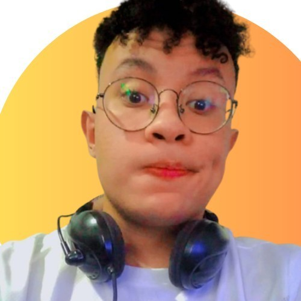

Business Intelligence · Editora Globo · Rio de Janeiro, RJ
Movido por dados, estratégia e impacto real —
transformando informação em decisões que conectam a Globo ao seu público.
24 anos, carioca, apaixonado por tecnologia desde criança. Minha trajetória conecta design, inteligência de negócios e análise de dados — e hoje isso tudo converge dentro da própria Globo.
Meus valores não são acidentais — são o resultado de cada experiência que me ensinou a unir estratégia, criatividade e impacto. É exatamente isso que me conecta à missão da Globo.
A Globo conecta o Brasil há décadas — e em um momento em que audiências se fragmentam
e o comportamento digital muda mais rápido do que qualquer modelo tradicional consegue
acompanhar, acredito que minha experiência dentro da própria Editora Globo me coloca
em uma posição única: já entendo a cultura, já conheço os dados e já sei como o
negócio pensa.
Minha contribuição está em usar esse olhar interno aliado à visão de quem cresceu
consumindo conteúdo Globo como espectador — combinando inteligência de audiência,
automação e storytelling visual para ajudar a empresa a se conectar de forma ainda
mais profunda com públicos que estão sempre em evolução.
Meu interesse por BI nasceu naturalmente da interseção entre três mundos que já dominava: design (visualização e comunicação), marketing digital (comportamento e performance) e tecnologia (automação e dados). Quando percebi que Business Intelligence era exatamente essa junção — com impacto direto nas decisões de negócio — soube que era o caminho certo. E o estágio na Editora Globo confirmou isso.
Habilidades técnicas
Como imagino contribuindo na prática